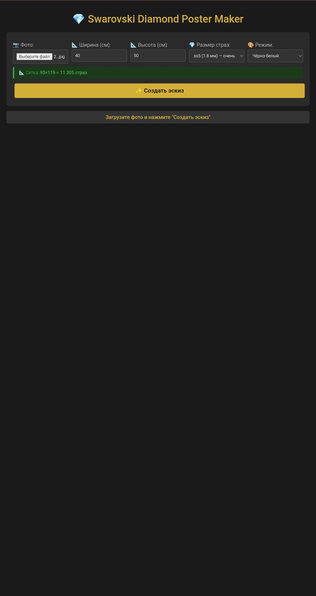
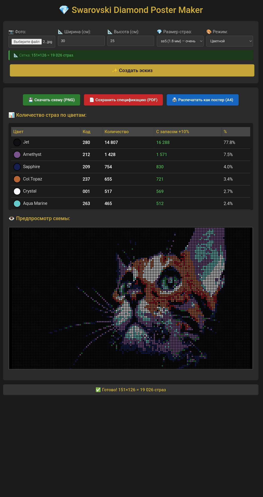
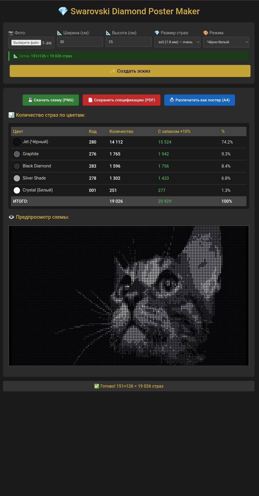
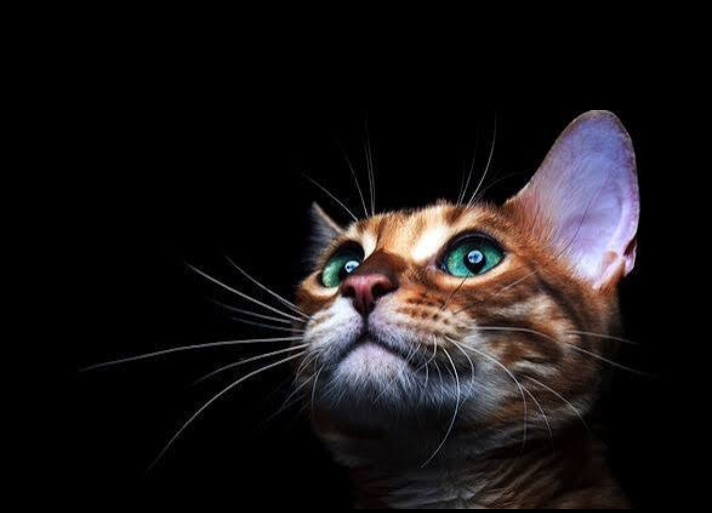
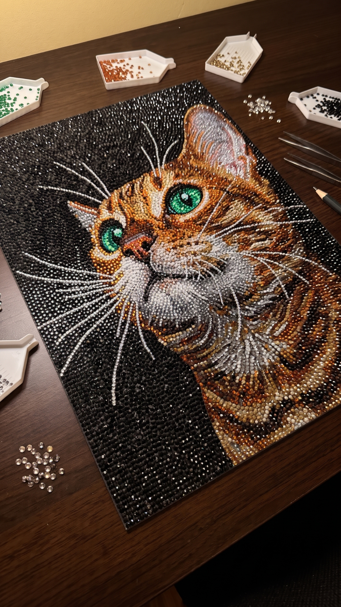
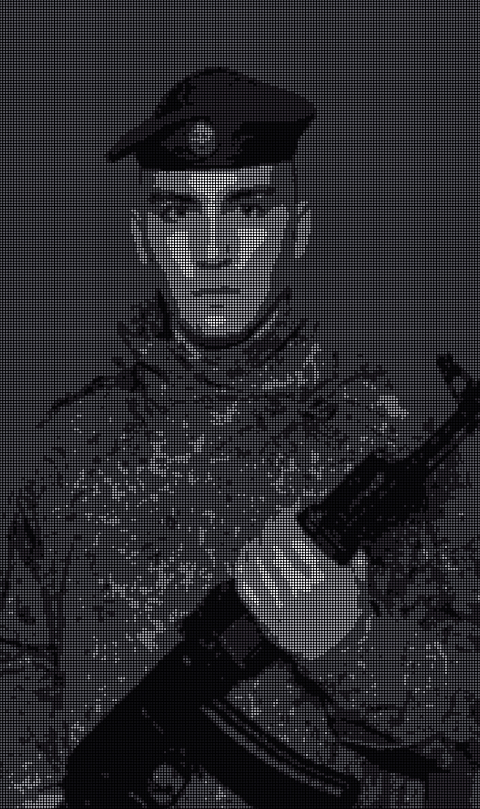
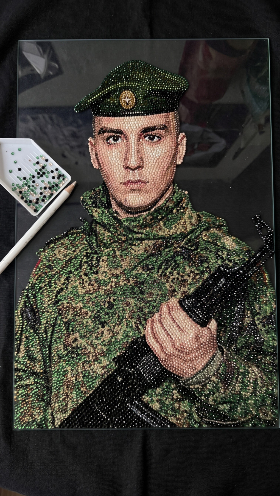

ЗАГРУЗКА
0%
Проект
Рабочее веб-приложение для создания схем алмазной мозаики. Загружаешь фото — получаешь готовую схему выкладки стразами Swarovski с точным расчётом количества каждого цвета.
Приложение превращает любое фото в схему для выкладки стразами. Ниже — визуальная история от загрузки фото до готовой картины.
Загрузка и настройка
Пользователь загружает фото, указывает размеры картины в сантиметрах, выбирает размер страз (от ss5 до ss40) и режим (цветной или чёрно-белый).

Цветной режим · 19 026 страз
Приложение рассчитывает сетку, подбирает цвета из палитры Swarovski и генерирует таблицу с точным количеством страз каждого цвета + запас 10%.

Ч/Б режим · 5 оттенков
В монохромном режиме приложение использует 5 оттенков: от Jet (чёрный) до Crystal (белый). Идеально для классических работ.

Исходник
Фото рыжего кота с зелёными глазами — то, что загружает пользователь. Приложение сохраняет приватность: фото не уходит на сервер.

Результат · 19 026 страз Swarovski
Схема из приложения воплощена в жизнь. Точная передача цвета глаз и сложных переходов шерсти.

Ч/Б режим · детализированная схема
Сложный портрет с камуфляжем и деталями формы. Приложение точно рассчитало оттенки для передачи реалистичности.

Результат · реализованная схема
Портрет, выложенный по схеме из приложения. Точная передача камуфляжа, телесных тонов и деталей формы.

Полная версия приложения является коммерческим продуктом и успешно продаётся. Ниже доступна ограниченная демо-версия для ознакомления с интерфейсом.
Работает в браузере, без установки
Приложение написано на чистом HTML, CSS и JavaScript — без фреймворков. Использует Canvas API для обработки изображений и генерации схем, библиотеку jsPDF для экспорта в PDF. Все вычисления происходят на стороне клиента, что гарантирует приватность и скорость работы.